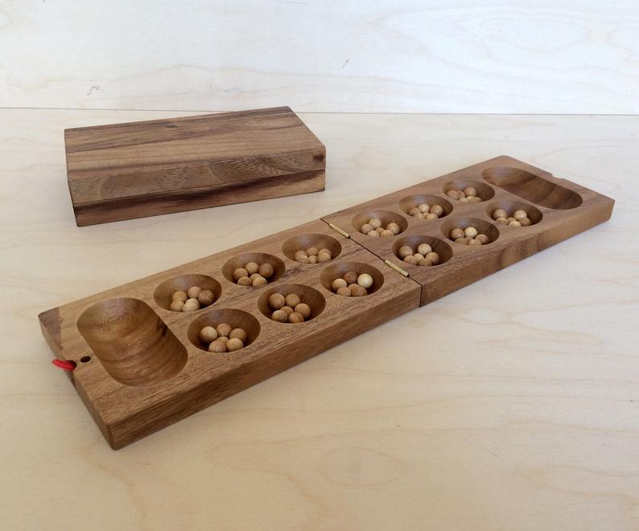

Készítsünk mesterséges intelligenciát a Kalah mankala-játékhoz!

A játéknak számos variánsa létezik, itt most egy egyszerű változatot fogunk megvalósítani. A táblán 12 kisebb és 2 nagyobb lyuk található; az egyes játékosokhoz a hozzájuk közelebb levő 6 lyuk és a jobb kéz felőli nagyobb lyuk (a kalah) tartozik. Kezdetben minden (kis) lyukban 6 kő van, bár szokás 4-4 kővel is játszani.
A játékosok felváltva lépnek. Egy lépés abból áll, hogy választanak egy saját lyukat, amiben van kő, és a benne levő köveket óramutató járásával ellenkező irányban egyesével beleszórják a következő lyukakba - amikor elfogynak a sajátok, akkor egy kerül a saját kalahba, utána az ellenfél lyukaiba, és ha azok elfogytak, akkor megint a sajátokba (az ellenfél kalahját ki kell hagyni).
Ha az utolsó kő a (saját) kalahba esik, akkor még egyszer lehet lépni (ez bárhányszor ismételhető). Ha az utolsó kő egy olyan saját lyukba kerül, ami előtte üres volt, és a szemben levő lyukban van kő, akkor a szóró játékos mindkét lyuk tartalmát megkapja és a kalahjába teszi.
A játékot az nyeri meg, aki megszerzi a köveknek több, mint a felét. A játéknak akkor is vége van, ha egy lépés végeztével az egyik térfél teljesen kiürül - ilyenkor a másik játékos megkapja a saját oldalán levő köveket.
Ez már egy elég komplex program lesz, amit apránként fogunk felépíteni top-down módon, tehát először egy magas szinten fogalmazzuk meg, és utána kitöltjük a részleteket.
A Kalah az absztrakt táblajátékok általános sémáját követi; erre írhatunk egy olyan keretprogramot, ami később akár más hasonló jellegű játékokra is használható lesz:
kalah :-
alapbeállítás(Állás, Játékos),
kirajzol(Állás, Játékos),
játék(Állás, Játékos).
játék(Állás, Játékos) :-
játék_vége(Állás, Játékos, Eredmény), !,
bejelent(Eredmény).
játék(Állás, Játékos) :-
lépést_választ(Állás, Játékos, Lépés),
lép(Lépés, Állás, Állás1),
következő_játékos(Játékos, Játékos1), !,
kirajzol(Állás1, Játékos1),
játék(Állás1, Játékos1).Az alapbeállítás felállítja a tábla kezdő állapotát, és meghatározza a kezdő játékost. Ezt kirajzoljuk, és utána kezdődik a tényleges játék/2. Ez először ellenőrzi, hogy vége van-e a játéknak, és ha igen, közli az eredményt. Egyébként a soron következő játékos választ egy lépést, ezt a lépést le is játsza, majd a következő játékos számára kirajzolja a (módosult) állást és a játék megy tovább.
A két játékosunk lehet az ember és a számítógép, és ezek váltakoznak, tehát
következő_játékos(ember, számítógép).
következő_játékos(számítógép, ember).Az eredmény lehet egyszerűen a nyertes megnevezése, vagy a döntetlen:
bejelent(ember) :- writeln('Nyertél, gratulálok!').
bejelent(számítógép) :- writeln('Nyertem.').
bejelent(döntetlen) :- writeln('Döntetlen lett!').Itt a writeln a write olyan változata, ami utána még egy újsort is kiír (nl).
A legfontosabb feladat itt is, mint mindig, a reprezentáció (adatábrázolás) ügyes megválasztása. Hogyan érdemes eltárolnunk az állást? A cél, hogy később kényelmesen le tudjuk írni a lépéseket.
Számozzuk be a lyukakat mindkét játékosnak balról jobbra 1-6-ig. A lépés tehát mindkét játékos számára egy 1 és 6 közötti szám lesz, vagyis pontosabban ezeknek egy listája, ugyanis ha az utolsó kő a kalahba kerül, akkor a játékos újra léphet, és így egy lépést a kiválasztott lyukak listájával lehet definiálni.
Az állást tehát a 2x6 lyukban, valamint a kalahokban levő kövek számával tudjuk leírni. A belső ábrázolásunk tábla(La,Na,Lb,Nb) alakú lesz, ahol La és Lb számok 6-elemű listája (a lyukakban levő kövek), Na és Nb sima számok (a kalahokban levő kövek). Az a-végűek az éppen soron következő játékoshoz tartozó adatok, a b-végűek az ellenfélhez tartozóak.
A játékot kezdje mindig az emberi játékos:
alapbeállítás(Állás, ember) :-
kövek_száma(K),
Állás = tábla([K,K,K,K,K,K],0,
[K,K,K,K,K,K],0).
kövek_száma(6).A kövek számát érdemes a fent látható módon kivenni külön ténybe, hogy később kényelmesen változtatható legyen.
Mikor van vége a játéknak? Itt azt az egyszerűsítést alkalmazhatjuk, hogy ha az egyik térfél a lépés végére kiürül, akkor a másik térfélen levő kövek - még a lépés részeként - bekerülnek a megfelelő kalahba. Elég tehát azt a feltételt megnéznünk, hogy valamelyik játékos elvitte már a köveknek több, mint a felét.
játék_vége(tábla(_,N,_,N), _, döntetlen) :-
kövek_száma(K), N =:= 6 * K, !.
játék_vége(tábla(_,N1,_,_), Játékos, Játékos) :-
kövek_száma(K), N1 > 6 * K, !.
játék_vége(tábla(_,_,_,N2), Játékos, Másik) :-
kövek_száma(K), N2 > 6 * K,
következő_játékos(Játékos, Másik).Következik a lépések leírása. Ahogy láttuk, a lépés lyukak listájával van megadva. Ha a lista végére értünk, akkor a másik játékos következik, ezért meg kell “fordítani” a táblát:
lép([], Állás, Állás1) :- megfordít(Állás, Állás1).
megfordít(tábla(La,Na,Lb,Nb), tábla(Lb,Nb,La,Na)).Egyébként pedig körbeszórjuk (vetjük) a köveket:
lép([L|M], Állás, Állás2) :-
kövek(L, Állás, K),
vet(K, L, Állás, Állás1),
lép(M, Állás1, Állás2).Itt a kövek megadja, hogy egy adott lyukban hány kő van:
kövek(I, tábla(L,_,_,_), K) :- n_edik(I, L, K), K > 0.
n_edik(N, [_|M], X) :-
N > 1, !, N1 is N - 1,
n_edik(N1, M, X).
n_edik(1, [X|_], X).A vetés a játék lelke, és egyben a legbonyolultabb része. Ezt két részre szedjük, a saját oldalon és az ellenfél oldalon való vetésre (utóbbi szükség szerint újra hivatkozik majd a vet-re):
vet(Kövek, Luk, Állás, Állás2) :-
vet_saját(Kövek, Luk, Állás, Állás1, Kövek1),
vet_ellenfél(Kövek1, Állás1, Állás2).Ez tehát azt mondja, hogy a Luk lyukból indulva vetünk Kövek darab követ, és így jutunk a kezdeti Állás-ból a végső Állás2-be. A saját oldali vetés végeztekor egy közbülső Állás1-be jutunk, ahol még további Kövek1 darab követ kell vetnünk az ellenfél oldalára.
Ha a kövek száma nagyobb, mint 7 - Luk, akkor átjutunk az ellenfél oldalára (tehát az 1-es lyukból legalább 7 kő kell, a 2-esből 6, …, a 6-osból legalább 2, hiszen az első a kalahba kerül):
vet_saját(Kövek, Luk, tábla(La,Na,Lb,Nb),
tábla(La1,Na1,Lb,Nb), Kövek1) :-
Kövek > 7 - Luk, !, % átmegy az ellenfélhez
felvesz_és_szór(Luk, Kövek, La, La1),
Na1 is Na + 1, Kövek1 is Kövek + Luk - 7.A lényeget a felvesz_és_szór végzi, amit kicsit későbbre hagyunk. Ha nem jutunk át a másik oldalra, akkor a megmaradó kövek száma 0:
vet_saját(Kövek, Luk, tábla(La,Na,Lb,Nb), Állás, 0) :-
Kövek =< 7 - Luk,
felvesz_és_szór(Luk, Kövek, La, La1),
elfogás(Luk, Kövek, La1, La2, Lb, Lb1, N),
raktározás(N, Kövek, Luk, Na, Na1),
vetés_vége(tábla(La2,Na1,Lb1,Nb), Állás).Az elfogás megnézi, hogy hány követ ejtettünk foglyul (N), és hogy ennek hatására hogyan változik a tábla (új La2 és Lb1 értékek). A raktározás frissíti a kalah értékét (Na1), egyrészt az elfogott kövek, másrészt az aktuális vetés során oda jutó kő figyelembe vételével. Végül a vetés_vége ellenőrzi, hogy kiürült-e az egyik térfél, és ha igen, akkor a fennmaradó köveket a megfelelő kalahba teszi.
Nézzük meg ezeket sorban!
elfogás(Luk, Kövek, La, La1, Lb, Lb1, N) :-
Vége is Luk + Kövek,
n_edik(Vége, La, 1),
Szemben is 7 - Vége,
n_edik(Szemben, Lb, K),
K > 0, !, % üresbe érkeztünk és van szemben kő
n_csere(Vége, La, 0, La1),
n_csere(Szemben, Lb, 0, Lb1),
N is K + 1.
elfogás(_, _, La, La, Lb, Lb, 0) :- !.
n_csere(1, [_|M], Y, [Y|M]) :- !.
n_csere(N, [X|M], Y, [X|M1]) :-
N > 1, !, N1 is N - 1,
n_csere(N1, M, Y, M1).A Vége adja meg, hogy melyik lyukba kerül az utolsó kő. Ha ebben 1 kő van, tehát a vetés előtt üres volt, akkor megvizsgáljuk, hogy szemben van-e kő (a szemben levő lyukak számozásának iránya fordított, ezért a megfelelő index a 7 - Vége lesz). Ha ez is teljesül, akkor kinullázzuk ezt a két lyukat az n_csere(I, L, X, L1) használatával, ami az L lista I-edik elemét X-re állítja. Végül a kapott kövek száma a szemben levő kövek száma + 1. Ellenkező esetben a tábla változatlan marad és a kapott kövek száma 0 lesz.
Figyeljük meg, hogy itt az aránylag bonyolult feltételt nem ismételjük meg a második szabályban, hanem a procedurális olvasatra hagyatkozunk: az első szabályban levő vágás miatt a másodikba csak akkor jutunk, ha a feltétel nem teljesül. Ez a deklaratív olvasatot elrontja, de megengedhető, mivel tudjuk, hogy csak olyan környezetben használjuk, ahol az La1, Lb1 és N változóknak nincsen értéke. A hatékonyság érdekében sok szabály használja itt ezt a módszert.
A raktározás elég magától értetődő. Ha az elfogott kövek száma 0, akkor ellenőrzi, hogy az utolsó kő a kalahba került-e, egyébként csak hozzáadja az eddigiekhez az elfogott köveket:
raktározás(0, Kövek, Luk, Na, Na) :-
Kövek < 7 - Luk, !.
raktározás(0, Kövek, Luk, Na, Na1) :-
Kövek =:= 7 - Luk, !, Na1 is Na + 1.
raktározás(N, _, _, Na, Na1) :-
N > 0, !, Na1 is Na + N.A kiürült térfelek kezelésekor a másik térfél köveit összeadjuk, és azt is kiürítjük:
vetés_vége(tábla(La,Na,Lb,Nb), tábla(La,Na,La,Nb1)) :-
üres(La), !, összeg(Lb, X), Nb1 is Nb + X.
vetés_vége(tábla(La,Na,Lb,Nb), tábla(Lb,Na1,Lb,Nb)) :-
üres(Lb), !, összeg(La, X), Na1 is Na + X.
vetés_vége(Állás, Állás) :- !.
üres([0,0,0,0,0,0]).
összeg(L, X) :- összeg(L, 0, X).
összeg([], A, A).
összeg([K|M], A, X) :-
A1 is A + K,
összeg(M, A1, X).A saját oldali vetéssel így már majdnem készen vagyunk, csak a felvesz_és_szór hiányzik:
felvesz_és_szór(0, K, L, L1) :- % szórás folytatása
!, szór(K, L, L1).
felvesz_és_szór(1, K, [_|M], [0|M1]) :-
!, szór(K, M, M1).
felvesz_és_szór(Luk, K, [L|M], [L|M1]) :-
Luk > 1, !, Luk1 is Luk - 1,
felvesz_és_szór(Luk1, K, M, M1).A K itt a szórandó kövek számát adja meg, a Luk pedig a lyuknak a száma, ahonnan szórunk. Ha a Luk értéke 0, az azt jelenti, hogy egy korábban elkezdődött vetés folytatódik, és az első kőnek az 1-es számú lyukba kell esnie. (A tényleges szórást a szór végzi.) Ha a Luk száma az 1-es, akkor a kapott lyuk-lista első elemét kinullázzuk (kivesszük belőle a köveket), a többit pedig a szór segítségével módosítjuk. Végül ha a Luk száma nagyobb, mint 1, akkor a lyuk-lista első eleme megmarad, a maradékot pedig rekurzív hívással tudjuk megadni.
A szórásnál lyukanként haladunk, és mindegyikbe egy kerül, amíg vagy nincs több lyuk, vagy nincs több kő:
szór(0, L, L) :- !.
szór(N, [L|M], [L1|M1]) :-
N > 0, !,
N1 is N - 1, L1 is L + 1,
szór(N1, M, M1).
szór(_, [], []) :- !.Hátra van még a vetés az ellenfél oldalán. Itt 4 esetet különböztetünk meg:
Ennek megfelel az alábbi 4 szabály:
vet_ellenfél(0, Állás, Állás) :- !.
vet_ellenfél(Kövek, tábla(La,Na,Lb,Nb),
tábla(La,Na,Lb1,Nb)) :-
1 =< Kövek, Kövek =< 6,
\+ üres(La), !,
szór(Kövek, Lb, Lb1).
vet_ellenfél(Kövek, tábla(La,Na,Lb,Nb),
tábla(La,Na,La,Nb1)) :-
1 =< Kövek, Kövek =< 6,
üres(La), !,
összeg(Lb, X), Nb1 is Nb + Kövek + X.
vet_ellenfél(Kövek, tábla(La,Na,Lb,Nb), Állás) :-
Kövek > 6, !,
szór(6, Lb, Lb1),
Kövek1 is Kövek - 6,
vet(Kövek1, 0, tábla(La,Na,Lb1,Nb), Állás).A nehezén túl vagyunk, de ahhoz, hogy játszani is tudjunk, meg is kell valahogy jeleníteni a táblát, és kommunikálni kell a játékossal.
A tábla így fog kinézni:
6 6 6 6 6 6
0 0
6 6 6 6 6 6A kirajzolásnál mindig a(z ember) játékos sora lesz alul, tehát a számítógép sorát kell elsőnek kiírni. Ezt úgy érjük el, hogy ha a játékos jön, akkor megfordítjuk a táblát a tényleges kirajzolás előtt:
kirajzol(Állás, számítógép) :- kirajzol(Állás).
kirajzol(Állás, ember) :-
megfordít(Állás, Állás1),
kirajzol(Állás1).A két sor kiírását a sort_ír végzi, a kalahokét a kalahot_ír. A felső sor számozása jobbról balra történik, tehát ezt a listát meg kell fordítani kiírás előtt:
kirajzol(tábla(La,Na,Lb,Nb)) :-
nl,
fordított(La, F),
sort_ír(F),
kalahot_ír(Na, Nb),
sort_ír(Lb).A sorokat 5 szóköznyi behúzással indítjuk, hogy legyen hely a baloldali kalahnak is. Ehhez a tab szabályt használjuk - ez az SWI Prolog netes verziójában nem használható (és a write is nagyon lassú), ezért érdemes a letölthető verzióban tesztelni.
sort_ír(L) :- tab(5), lyukat_ír(L).
lyukat_ír([]) :- nl.
lyukat_ír([L|M]) :- köveket_ír(L), lyukat_ír(M).
köveket_ír(N) :- N < 10, write(N), tab(4).
köveket_ír(N) :- N >= 10, write(N), tab(3).
kalahot_ír(N1, N2) :- köveket_ír(N1), tab(30), write(N2), nl.A köveket_ír mindig 3 vagy 4 szóközt ír annak függvényében, hogy egy- vagy kétjegyű a kövek száma.
A mesterséges intelligencia még nincs meg, de a program már majdnem tesztelhető. Csak a lépést_választ hiányzik, amit egyelőre írjunk meg úgy, hogy mindig a játékost kérdezi:
lépést_választ(_, _, Lépés) :-
nl, writeln('Melyiket választod?'),
read(Lépés), érvényes(Lépés).
érvényes([]).
érvényes([L|M]) :- 0 < L, L < 7, érvényes(M).A lépés érvényességére csak egy minimális ellenőrzés van, azt sem ellenőrzi, hogy nem kéne-e folytatnunk a lépést vagy hogy nem léptünk-e túl sokszor (de ld. lejjebb az 2. feladatot).
Itt egy pár lépés ízelítőnek:
?- kalah.
6 6 6 6 6 6
0 0
6 6 6 6 6 6
Melyiket választod?
|: [1,5].
6 7 7 7 7 7
0 2
0 7 7 7 0 8
Melyiket választod?
|: [3].
7 8 8 0 7 7
1 2
1 8 8 7 0 8
Melyiket választod?
|: [2].
7 8 8 1 8 8
1 3
1 0 9 8 1 9
Melyiket választod?
|: [1].
8 9 9 2 9 0
2 3
2 1 9 8 1 9
Melyiket választod?
|: [6].
9 10 10 3 10 1
2 4
3 2 9 8 1 0
Melyiket választod?
|: [3].
10 11 11 0 10 1
2 4
3 2 9 8 1 0
Melyiket választod?
|: [5].
10 11 11 0 10 0
2 6
3 2 9 8 0 0
Melyiket választod?
|: vége.
false.A program jelenleg tetszőleges hibás lépésre (pl. vége) leáll. Kipróbálhatjuk egy-egy speciális esetre is, mint például ez:
?- Állás = tábla([1,1,1,1,1,1],23,[16,3,1,1,3,3],16),
kirajzol(Állás, ember), játék(Állás, ember).
3 3 1 1 3 16
16 23
1 1 1 1 1 1
Melyiket választod?
|: [6,5].
3 3 1 1 3 0
16 41
1 1 1 1 0 0
Nyertél, gratulálok!A számítógép az ún. alfa-béta nyírás algoritmusa szerint fog működni. Ennek a lényege az, hogy minden játékálláshoz tudunk rendelni egy számot, ami minél magasabb, annál kedvezőbb nekünk. Ezután végiggondoljuk az összes lépési lehetőséget (az ellenfél lépéseit is természetesen) valahány lépésre előre, ezt a lépésszámot mélységnek szokás nevezni.
Nézzünk egy nagyon egyszerű példát! Az alábbi ábra lépések fáját mutatja: a pontok és számok játékállásokat jelölnek, míg a köztük levő szakaszok a lépéseket.
. <- mostani helyzet
/ \
/ \
/ \
. . <- mi lépésünk után
/ \ / \
1 2 -1 3 <- ellenfél lépése utánItt a mélység 2, tehát 2 lépésre előre gondolkodunk, és a legmélyebb szinten kiértékelünk minden állást. Két lépéslehetőségünk van, és ezekre az ellenfélnek 2-2 válasza. Feltesszük, hogy az ellenfelünk jól játszik, tehát ha a baloldali lépést választjuk, arra az ellenfél a saját baloldali (1-es értékelésű) lépését fogja válaszolni, nem pedig a jobboldalit, ami nekünk kedvezőbb állást (2) eredményez. Hasonlóan járunk el a jobboldali lépésnél: az ellenfél két válasza közül feltételezzük a kisebbet (-1). Azt láttuk tehát, hogy a baloldali lépés legrosszabb esetben 1-es, a jobboldali -1-es értékelésű. Mi nyilván a nagyobbat választjuk, tehát a mostani helyzetünk 1-es értékelésű lesz:
1 <- mostani helyzet
/ \
/ \
/ \
1 -1 <- mi lépésünk után
/ \ / \
1 2 -1 3 <- ellenfél lépése utánHa itt kell lépést választani, akkor a baloldali mellett döntünk. Ezt a gondolkodást minimax algoritmusnak hívják, mivel az ellenfél lépései közül a minimális értékűt, a saját lépések közül a maximális értékűt választjuk.
Az alfa-béta nyírás ennek egy hatékonyabb változata. Itt mindig számon tartjuk azt, hogy mi az a minimum, amit biztosan el tudunk érni (alfa), és mi az a maximum, amit elérhetünk (béta). Nézzük meg az előbbi példa kiértékelését, amikor már megvizsgáltuk a teljes baloldali ágat!
. <- mostani helyzet
/ \
/ \
/ \
1 . <- mi lépésünk után
/ \ / \
1 2 . . <- ellenfél lépése utánA jobboldali ággal még egyáltalán nem foglalkoztunk. Azt tudjuk, hogy ha a baloldali lépést választjuk, legrosszabb esetben 1-es (tehát alfa = 1). Hogyan módosul ez a jobboldali lépésre adott baloldali válasz megvizsgálása után?
. <- mostani helyzet
/ \
/ \
/ \
1 . <- mi lépésünk után
/ \ / \
1 2 -1 . <- ellenfél lépése utánAzt látjuk, hogy ha a jobboldali lépést választjuk, akkor legjobb esetben -1-re számíthatunk (béta = -1). Lehet, hogy az ellenfélnek van egy még erősebb lépése, és a tényleges maximum még kisebb, de nagyobb nem lehet. Viszont a baloldali ágon már van egy biztos 1-es, tehát ezt az ágat nem érdemes tovább vizsgálni, le lehet “nyírni”. Általában tehát ha egy ágon a béta érték kisebb vagy egyenlő, mint az eddigi legjobb alfa, akkor nem kell vele foglalkozni.
Az algoritmust teljesen általánosan meg lehet fogalmazni, a konkrét játéktól függetlenül. Csak azt feltételezzük, hogy a következők adottak:
lépés(Állás, Lépés) : adott állásból lehetséges lépéslép(Lépés, Állás, Állás1) : adott lépés lejátszásaértékelés(Állás, Érték) : adott állás kiértékeléseEbből egyelőre csak a második van meg, a maradék kettőt a következő részben fogjuk elkészíteni. Most azonban nézzük az általános algoritmust! Hogy ne kelljen külön kezelni a minimum- és maximumkereső eseteket, az értékeléseket minden szintváltáskor negáljuk. Ahhoz, hogy ez működjön, feltételezzük, hogy a keresési mélység kezdetben páros, tehát a 0-ás mélységen a pozitív szám jelenti a nekünk jó állást.
alfa_béta(0, Állás, _, _, (_, Érték)) :-
értékelés(Állás, Érték).
alfa_béta(Mélység, Állás, Alfa, Béta, (Lépés, Érték)) :-
Mélység > 0, Mélység1 is Mélység - 1,
Alfa1 is -Béta, Béta1 is -Alfa,
findall(L, lépés(Állás, L), Lépések),
választ(Lépések, Állás, Mélység1, Alfa1, Béta1,
nincs, (Lépés, Érték)).Ha az előrelátás mélysége 0, akkor az aktuális állást egyszerűen kiértékeljük. (Ilyenkor a legjobb lépést jelölő Lépés nem kap értéket.) Ha a mélység legalább 1, akkor eggyel csökkentjük, negáljuk és megcseréljük az alfát és bétát (hogy a másik játékos szemszögébe kerüljünk), és választunk az összes lehetséges lépés közül.
(Megjegyzés: A (Lépés, Érték) egy pár - ez is egy struktúra, aminek a funktora a vessző, tehát ez valójában úgy is írható, hogy ','(Lépés, Érték), és általánosan az (a,b) =.. [',',a,b]. teljesül.)
A választást a választ végzi:
választ([], _, _, Alfa, _, Legjobb, (Legjobb, Alfa)).
választ([Lépés|M], Állás, Mélység, Alfa, Béta, Legjobb, X) :-
lép(Lépés, Állás, Állás1),
alfa_béta(Mélység, Állás1, Alfa, Béta, (_, Érték)),
Érték1 is -Érték,
nyír((Lépés, Érték1), Mélység, Alfa, Béta, M, Állás, Legjobb, X).Az utolsóelőtti argumentum az eddigi legjobb lépés (kezdetben nincs), az utolsó pedig a végső megtalált legjobb lépés és a hozzá tartozó értékelés.
Ha a lehetséges lépések listája üres, akkor az eddigi legjobb lépést adja vissza (Legjobb) és a hozzá tartozó érték az Alfa lesz. Ha nem üres, akkor kipróbálja az első lépést: lejátsza, és az így keletkező állást (rekurzívan) kiértékeli az alfa_béta szabállyal. Az így kapott Érték-et negálni kell, mert egy szinttel feljebb léptünk. Végül a nyír az eredeti Állás állapotból való lépések közül (rekurzívan) választ, miközben lenyírja azokat az ágakat, amelyeket felesleges kiértékelni:
nyír((Lépés, Érték), _, _, Béta, _, _, _, (Lépés, Érték)) :-
Érték >= Béta.
nyír((Lépés, Érték), Mélység, Alfa, Béta, Többi, Állás, _, X) :-
Alfa < Érték, Érték < Béta,
választ(Többi, Állás, Mélység, Érték, Béta, Lépés, X).
nyír((_, Érték), Mélység, Alfa, Béta, Többi, Állás, Lépés1, X) :-
Érték =< Alfa,
választ(Többi, Állás, Mélység, Alfa, Béta, Lépés1, X).Itt három esetet különböztetünk meg, a megvizsgált lépés értékelésétől függően:
Hogyan tudjuk az összes lehetséges lépést leírni?
lépés(tábla([0,0,0,0,0,0],_,_,_), []).
lépés(Állás, [L|M]) :-
tartalmaz(L, [1,2,3,4,5,6]),
kövek(L, Állás, K),
lépést_folytat(K, L, Állás, M).Ha a térfelünk üres, nincs lehetséges lépés. (Erre azért van szükség, mert a játékot be lehet fejezni úgy, hogy az utolsó követ a kalahba rakjuk.) Egyébként a lépés első eleme egy lyukat jelölő 1 és 6 közti szám; a kövek biztosítja, hogy van is benne kő. Azt kell csak ellenőrizni, hogy a kalahba kerül-e az utolsó, amire a feltétel a 13-al való osztási maradékkal számolható:
lépést_folytat(Kövek, L, _, []) :-
Kövek =\= (7 - L) mod 13, !.
lépést_folytat(Kövek, L, Állás, Lépések) :-
Kövek =:= (7 - L) mod 13, !,
vet(Kövek, L, Állás, Állás1),
lépés(Állás1, Lépések).Ha a kalahba került, akkor a köveket végigszórjuk, és ebből az állásból rekurzívan további lépéseket keresünk.
Egy állás értékelésére egy nagyon egyszerű definíció a kalahokban levő kövek különbsége:
értékelés(tábla(_,Na,_,Nb), X) :- X is Na - Nb.Már csak annyi van hátra, hogy átírjuk a lépést_választ szabályt. A régi verzió megmarad arra az esetre, amikor az emberi játékos van lépésen; a számítógép esetében pedig az alfa-béta nyírást használjuk:
lépést_választ(_, ember, Lépés) :-
nl, writeln('Melyiket választod?'),
read(Lépés), érvényes(Lépés).
lépést_választ(Állás, számítógép, Lépés) :-
előrelátás(Mélység),
alfa_béta(Mélység, Állás, -40, 40, (Lépés, _)),
nl, write(Lépés), nl.
előrelátás(4).Az alfa-béta intervallumot kezdetben jó nagyra állítjuk (-40, 40), az előrelátás mélységét pedig a könnyebb módosíthatóság kedvéért egy külön tényként tároljuk.
Itt egy 6-os mélységű mesterséges intelligencia ellen játszott 4-köves játék, ahol a gép kezdett:
?- kalah.
4 4 4 4 4 4
0 0
4 4 4 4 4 4
[3,6]
0 5 5 0 4 4
2 0
5 5 5 5 4 4
Melyiket választod?
|: [2,1].
0 5 5 0 4 4
2 1
0 1 7 7 6 6
[4]
1 6 0 0 4 4
3 1
1 2 7 7 6 6
Melyiket választod?
|: [1].
1 6 0 0 4 4
3 1
0 3 7 7 6 6
[5]
2 0 0 0 4 4
4 1
1 4 8 8 6 6
Melyiket választod?
|: [2].
2 0 0 0 4 4
4 1
1 0 9 9 7 7
[6]
0 0 0 0 4 4
5 1
2 0 9 9 7 7
Melyiket választod?
|: [1].
0 0 0 0 4 4
5 1
0 1 10 9 7 7
[1]
0 0 1 1 5 0
7 1
0 0 10 9 7 7
Melyiket választod?
|: [5].
0 1 2 2 6 1
7 2
0 0 10 9 0 8
[1]
0 1 2 2 7 0
7 2
0 0 10 9 0 8
Melyiket választod?
|: [6].
0 2 3 3 8 1
7 5
0 0 10 9 0 0
[5,6,4,6,1]
0 1 0 3 9 0
11 5
0 0 10 9 0 0
Melyiket választod?
|: [3].
1 2 1 4 10 1
11 6
0 0 0 10 1 1
[6,5,4]
1 1 0 4 10 1
13 6
0 0 0 10 1 1
Melyiket választod?
|: [4].
0 2 1 5 11 2
13 10
0 0 0 0 2 2
[1]
0 2 1 6 12 0
13 10
0 0 0 0 2 2
Melyiket választod?
|: [6].
0 2 1 6 12 1
13 11
0 0 0 0 2 0
[1]
0 2 1 6 13 0
13 11
0 0 0 0 2 0
Melyiket választod?
|: [5,6].
0 0 0 0 0 0
35 13
0 0 0 0 0 0
Nyertem.Írjátok át a játékos lépését, hogy hibás lépés esetén kérdezzen újra, és kilépés-re lépjen ki!
Készítsetek szigorúbb ellenőrzést az emberi játékos lépéseihez, ami (i) nem enged üres lyukat választani, és (ii) akkor és csak akkor enged több lépést, ha az utolsó kő a kalahba kerül!
(*) Írjátok át a programot úgy, hogy a bonyolultabb (de izgalmasabb) Oware játék szabályait kövesse!
(**) Írjatok dámajátékot! A játék kerete legyen ugyanaz, és a számítógép használja a fenti alfa-béta nyírás algoritmust.
% Magas szintű keretprogram
kalah :-
alapbeállítás(Állás, Játékos),
kirajzol(Állás, Játékos),
játék(Állás, Játékos).
játék(Állás, Játékos) :-
játék_vége(Állás, Játékos, Eredmény), !,
bejelent(Eredmény).
játék(Állás, Játékos) :-
lépést_választ(Állás, Játékos, Lépés),
lép(Lépés, Állás, Állás1),
következő_játékos(Játékos, Játékos1), !,
kirajzol(Állás1, Játékos1),
játék(Állás1, Játékos1).
következő_játékos(ember, számítógép).
következő_játékos(számítógép, ember).
bejelent(ember) :- writeln('Nyertél, gratulálok!').
bejelent(számítógép) :- writeln('Nyertem.').
bejelent(döntetlen) :- writeln('Döntetlen lett!').
% Reprezentáció
alapbeállítás(Állás, ember) :-
kövek_száma(K),
Állás = tábla([K,K,K,K,K,K],0,
[K,K,K,K,K,K],0).
% Szabályok
játék_vége(tábla(_,N,_,N), _, döntetlen) :-
kövek_száma(K), N =:= 6 * K, !.
játék_vége(tábla(_,N1,_,_), Játékos, Játékos) :-
kövek_száma(K), N1 > 6 * K, !.
játék_vége(tábla(_,_,_,N2), Játékos, Másik) :-
kövek_száma(K), N2 > 6 * K,
következő_játékos(Játékos, Másik).
lép([], Állás, Állás1) :- megfordít(Állás, Állás1).
lép([L|M], Állás, Állás2) :-
kövek(L, Állás, K),
vet(K, L, Állás, Állás1),
lép(M, Állás1, Állás2).
megfordít(tábla(La,Na,Lb,Nb), tábla(Lb,Nb,La,Na)).
kövek(I, tábla(L,_,_,_), K) :- n_edik(I, L, K), K > 0.
vet(Kövek, Luk, Állás, Állás2) :-
vet_saját(Kövek, Luk, Állás, Állás1, Kövek1),
vet_ellenfél(Kövek1, Állás1, Állás2).
vet_saját(Kövek, Luk, tábla(La,Na,Lb,Nb),
tábla(La1,Na1,Lb,Nb), Kövek1) :-
Kövek > 7 - Luk, !, % átmegy az ellenfélhez
felvesz_és_szór(Luk, Kövek, La, La1),
Na1 is Na + 1, Kövek1 is Kövek + Luk - 7.
vet_saját(Kövek, Luk, tábla(La,Na,Lb,Nb), Állás, 0) :-
Kövek =< 7 - Luk,
felvesz_és_szór(Luk, Kövek, La, La1),
elfogás(Luk, Kövek, La1, La2, Lb, Lb1, N),
raktározás(N, Kövek, Luk, Na, Na1),
vetés_vége(tábla(La2,Na1,Lb1,Nb), Állás).
felvesz_és_szór(0, K, L, L1) :- % szórás folytatása
!, szór(K, L, L1).
felvesz_és_szór(1, K, [_|M], [0|M1]) :-
!, szór(K, M, M1).
felvesz_és_szór(Luk, K, [L|M], [L|M1]) :-
Luk > 1, !, Luk1 is Luk - 1,
felvesz_és_szór(Luk1, K, M, M1).
szór(0, L, L) :- !.
szór(N, [L|M], [L1|M1]) :-
N > 0, !,
N1 is N - 1, L1 is L + 1,
szór(N1, M, M1).
szór(_, [], []) :- !.
elfogás(Luk, Kövek, La, La1, Lb, Lb1, N) :-
Vége is Luk + Kövek,
n_edik(Vége, La, 1),
Szemben is 7 - Vége,
n_edik(Szemben, Lb, K),
K > 0, !, % üresbe érkeztünk és van szemben kő
n_csere(Vége, La, 0, La1),
n_csere(Szemben, Lb, 0, Lb1),
N is K + 1.
elfogás(_, _, La, La, Lb, Lb, 0) :- !.
raktározás(0, Kövek, Luk, Na, Na) :-
Kövek < 7 - Luk, !.
raktározás(0, Kövek, Luk, Na, Na1) :-
Kövek =:= 7 - Luk, !, Na1 is Na + 1.
raktározás(N, _, _, Na, Na1) :-
N > 0, !, Na1 is Na + N.
vetés_vége(tábla(La,Na,Lb,Nb), tábla(La,Na,La,Nb1)) :-
üres(La), !, összeg(Lb, X), Nb1 is Nb + X.
vetés_vége(tábla(La,Na,Lb,Nb), tábla(Lb,Na1,Lb,Nb)) :-
üres(Lb), !, összeg(La, X), Na1 is Na + X.
vetés_vége(Állás, Állás) :- !.
üres([0,0,0,0,0,0]).
vet_ellenfél(0, Állás, Állás) :- !.
vet_ellenfél(Kövek, tábla(La,Na,Lb,Nb),
tábla(La,Na,Lb1,Nb)) :-
1 =< Kövek, Kövek =< 6,
\+ üres(La), !,
szór(Kövek, Lb, Lb1).
vet_ellenfél(Kövek, tábla(La,Na,Lb,Nb),
tábla(La,Na,La,Nb1)) :-
1 =< Kövek, Kövek =< 6,
üres(La), !,
összeg(Lb, X), Nb1 is Nb + Kövek + X.
vet_ellenfél(Kövek, tábla(La,Na,Lb,Nb), Állás) :-
Kövek > 6, !,
szór(6, Lb, Lb1),
Kövek1 is Kövek - 6,
vet(Kövek1, 0, tábla(La,Na,Lb1,Nb), Állás).
% Kirajzolás
kirajzol(Állás, számítógép) :- kirajzol(Állás).
kirajzol(Állás, ember) :-
megfordít(Állás, Állás1),
kirajzol(Állás1).
kirajzol(tábla(La,Na,Lb,Nb)) :-
nl,
fordított(La, F),
sort_ír(F),
kalahot_ír(Na, Nb),
sort_ír(Lb).
sort_ír(L) :- tab(5), lyukat_ír(L).
lyukat_ír([]) :- nl.
lyukat_ír([L|M]) :- köveket_ír(L), lyukat_ír(M).
köveket_ír(N) :- N < 10, write(N), tab(4).
köveket_ír(N) :- N >= 10, write(N), tab(3).
kalahot_ír(N1, N2) :- köveket_ír(N1), tab(30), write(N2), nl.
% Alfa-béta nyírás
alfa_béta(0, Állás, _, _, (_, Érték)) :-
értékelés(Állás, Érték).
alfa_béta(Mélység, Állás, Alfa, Béta, (Lépés, Érték)) :-
Mélység > 0, Mélység1 is Mélység - 1,
Alfa1 is -Béta, Béta1 is -Alfa,
findall(L, lépés(Állás, L), Lépések),
választ(Lépések, Állás, Mélység1, Alfa1, Béta1,
nincs, (Lépés, Érték)).
választ([], _, _, Alfa, _, Legjobb, (Legjobb, Alfa)).
választ([Lépés|M], Állás, Mélység, Alfa, Béta, Legjobb, X) :-
lép(Lépés, Állás, Állás1),
alfa_béta(Mélység, Állás1, Alfa, Béta, (_, Érték)),
Érték1 is -Érték,
nyír((Lépés, Érték1), Mélység, Alfa, Béta, M, Állás, Legjobb, X).
nyír((Lépés, Érték), _, _, Béta, _, _, _, (Lépés, Érték)) :-
Érték >= Béta.
nyír((Lépés, Érték), Mélység, Alfa, Béta, Többi, Állás, _, X) :-
Alfa < Érték, Érték < Béta,
választ(Többi, Állás, Mélység, Érték, Béta, Lépés, X).
nyír((_, Érték), Mélység, Alfa, Béta, Többi, Állás, Lépés1, X) :-
Érték =< Alfa,
választ(Többi, Állás, Mélység, Alfa, Béta, Lépés1, X).
% Kalah-specifikus rész
lépés(tábla([0,0,0,0,0,0],_,_,_), []).
lépés(Állás, [L|M]) :-
tartalmaz(L, [1,2,3,4,5,6]),
kövek(L, Állás, K),
lépést_folytat(K, L, Állás, M).
lépést_folytat(Kövek, L, _, []) :-
Kövek =\= (7 - L) mod 13, !.
lépést_folytat(Kövek, L, Állás, Lépések) :-
Kövek =:= (7 - L) mod 13, !,
vet(Kövek, L, Állás, Állás1),
lépés(Állás1, Lépések).
értékelés(tábla(_,Na,_,Nb), X) :- X is Na - Nb.
lépést_választ(_, ember, Lépés) :-
nl, writeln('Melyiket választod?'),
read(Lépés), érvényes(Lépés).
lépést_választ(Állás, számítógép, Lépés) :-
előrelátás(Mélység),
alfa_béta(Mélység, Állás, -40, 40, (Lépés, _)),
nl, write(Lépés), nl.
érvényes([]).
érvényes([L|M]) :- 0 < L, L < 7, érvényes(M).
% Beállítások
kövek_száma(6).
előrelátás(4).
% Segéd-szabályok
tartalmaz(X, [X|_]).
tartalmaz(X, [_|Maradék]) :- tartalmaz(X, Maradék).
fordított(X, Y) :- fordított(X, [], Y).
fordított([], Y, Y).
fordított([X|M], F, Y) :- fordított(M, [X|F], Y).
n_edik(N, [_|M], X) :-
N > 1, !, N1 is N - 1,
n_edik(N1, M, X).
n_edik(1, [X|_], X).
n_csere(1, [_|M], Y, [Y|M]) :- !.
n_csere(N, [X|M], Y, [X|M1]) :-
N > 1, !, N1 is N - 1,
n_csere(N1, M, Y, M1).
összeg(L, X) :- összeg(L, 0, X).
összeg([], A, A).
összeg([K|M], A, X) :-
A1 is A + K,
összeg(M, A1, X).Ez a dokumentum az alábbi könyv 20.2. és 21.3. fejezete alapján készült:
L. Sterling, E. Shapiro: The Art of Prolog, 2nd Ed., MIT Press, 1994.